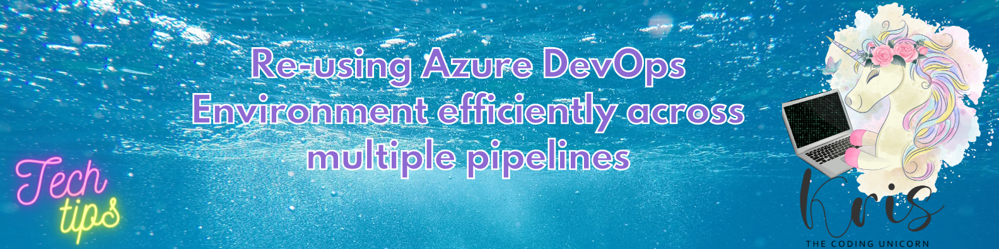
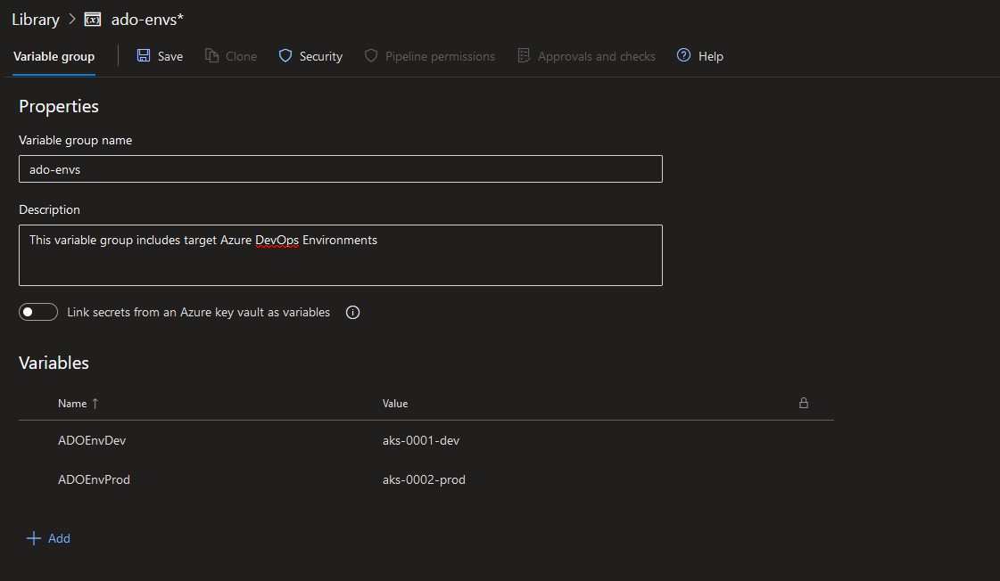

Re-Using Azure DevOps Environment Efficiently Across Multiple Pipelines

Following up on the recent blog post series about Continuous Delivery to AKS with Azure DevOps Environments:
🐱 Part 1
🐱 Part 2
I would like to share a simple but really useful way to re-use the same Azure DevOps Environment in multiple deployment stages across multiple pipelines. Normally if you want to deploy multiple applications to the same AKS cluster, you would specify a target Azure DevOps Environment by writing it's name in environment property of deployment stage of every application:
environment: aks-1111-dev.my-testapp
And that works well but when you suddenly need to use another cluster and another Azure DevOps Environment you would then need to go into every single pipeline definition for every application using this Environment and update the name. This means a lot of manual work, duplication of code and a lot of copy-paste with a risk of human error.😤 A much better approach to this is to create a variable group!😻
Then in case you need to change a target Azure DevOps Environment, you would need to update it in one place instead of a hundred places which results in higher re-usability, less duplicated code and faster upgrades. So you can do that by going to Pipelines -> Library section in Azure DevOps and choose + Variable group to create a new variable group (you can also use existing one if you want). Then you will need to provide a variable group name, description and create variables with values representing your target Azure DevOps Environments, like it's shown in the screenshot below:

In the pipelines you can then import your variable group at the root of the pipeline (it's important to import it at the root of the pipeline defintion so that the values can be populated during compile time) and you can refer the respective environment as if you would refer any other build variable:
trigger:
branches:
include:
- master
variables:
- group: 'ado-envs' # <- importing a variable group at the root of the pipeline definition
# REST OF THE CODE IS OMITTED
stages:
- stage: Build
# REST OF THE CODE IS OMITTED
- stage: Deploy_Dev
jobs:
- deployment: Deploy_Dev_AKS
pool:
vmImage: 'ubuntu-latest'
environment: $(ADOEnvDev).my-testapp # <- referencing ADO Environment as regular variable
strategy:
# REST OF THE CODE IS OMITTED
Since we must import variable group at the root of the pipeline, please note that if you're importing multiple variable groups with equal variable names like this, they might overwrite each other during build execution so please ensure that there are no variable name conflicts across variable groups when importing this way.
You can do the same with the target resource as well where we could create a $(testAppResourceDev) variable in the same variable group and replace my-testapp with $(testAppResourceDev).
If you want to learn more, you can also check this article: Environment - Kubernetes resource
Thanks for reading and till next tech tip! 😻